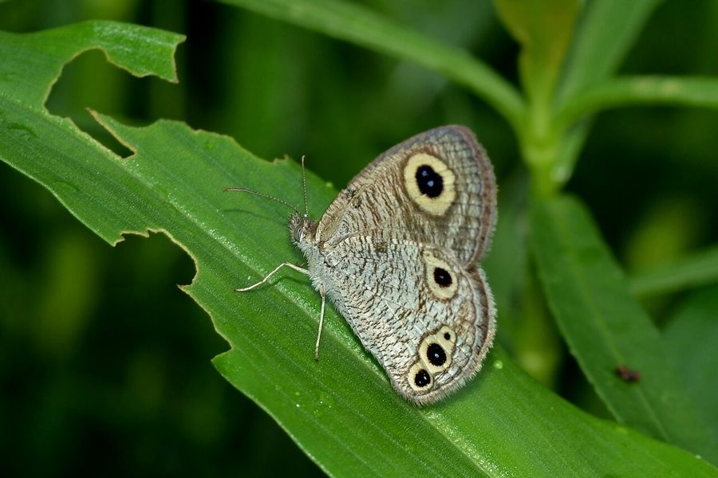

कॉमन फ़ोर-रिंग तितलीCommon Four-ring
Ypthima huebneri · Nymphalidae · INS-0137

- Scientific name वैज्ञानिक नाम
- Ypthima huebneri (Kirby, 1871)
- Family कुल
- Nymphalidae
- Hindi हिंदी
- कॉमन फ़ोर-रिंग तितली
- Local names स्थानीय नाम
- common four-ring, common four ring, four-ring
- Status here यहाँ की स्थिति
- native
- Movement आवागमन
- Resident, here all year
- Known from कहाँ दर्ज
- Others have published records from the wider Awadh–Purvanchal plain, none yet from Basti–Ayodhya अवध–पूर्वांचल से दूसरों के प्रकाशित अभिलेख, बस्ती–अयोध्या से अभी नहीं
- IUCN IUCN
- not evaluated
- Review समीक्षा
- audited and independently read
When to look कब देखें
Present all year. साल भर मौजूद।
Tell it apart from इनसे अलग पहचानें
कॉमन फ़ोर-रिंग तितली / Common Four-ring
Ypthima huebneri (Kirby, 1871) — Nymphalidae
कॉमन फ़ोर-रिंग तितली — एक मध्यम आकार की भूरी तितली जो घास के मैदानों और खेतों के किनारों में रहती है। इसके पंखों के पिछले हिस्से पर चार छोटे काले धब्बे होते हैं जिन्हें "आई-स्पॉट" या "ओसेली" कहते हैं — ये अंडाकार धब्बे शिकारियों को धोखा देते हैं। यह तितली गर्मी और सर्दी में अलग-अलग रंग की दिखती है। इसका कैटरपिलर घास की पत्तियों पर भोजन करता है।
Quick Identification त्वरित पहचान
| Feature | Description |
|---|---|
| Size | Medium butterfly, wingspan 30-35 mm |
| Colour | Grey-brown to dull brown; seasonal variation |
| Pattern | Mottled, with darker and lighter patches |
| Eyespots | Distinctive feature: four eyespots on hindwing underside (the "four rings") |
| Underside | Paler, mottled grey-brown with prominent eyespots |
| Flight | Low, fluttering flight; stays close to grass |
Field tip: A medium-sized brown butterfly with distinctive four dark eyespots visible on the underside of the hindwings. Look in grasslands and field margins. Camouflaged when at rest but the eyespots are distinctive.
हिंदी — कैसे पहचानें: भूरी तितली, पंख के नीचे चार काले गोल धब्बे। घास में बैठी।
Morphology आकारिकी
Biometrics:
| Measurement | Range |
|---|---|
| Wingspan | 30-35 mm |
| Forewing length | 14-17 mm |
| Body length | 10-12 mm |
Wings:
- Upperside: Grey-brown to dull brown, mottled with lighter and darker patches; camouflaged appearance blending with grass and soil.
- Underside: Paler, mottled grey-brown; the distinctive feature is the row of four prominent dark eyespots (ocelli) on the hindwings, each with a pale center.
Body: Brown; medium-sized for a butterfly.
Seasonal forms: Wet-season form is often darker; dry-season form is lighter.
Eyespots: The four prominent eyespots on the hindwing underside are diagnostic and give the species its name; these likely function as defense against predators (deflecting attacks from the head).
Life Cycle / Phenology जीवन चक्र
| Stage / Month | Event |
|---|---|
| January–December | Year-round; multiple overlapping generations |
| Egg | Laid on grass blades; incubation 5-8 days |
| Larva | Green caterpillar; feeds on grass blades; 2-3 weeks |
| Pupa | Small, formed among grass; 7-10 days |
| Adult | 3-4 weeks lifespan; year-round but seasonal abundance variation |
| Wet season form | May–October; darker colour |
| Dry season form | November–April; lighter colour |
हिंदी: साल भर। बहु-पीढ़ीय। गर्मी-सर्दी में अलग रंग।
Host Plants or Prey आहार
Larval host plants:
- Various wild grasses (exact species not fully documented)
- Grass species in field margins and grasslands
Adult food sources:
- Nectar from small flowers
- Rotting fruit and damp spots (occasionally)
- Rarely observed visiting flowers
Predators / Natural Enemies शत्रु
- Birds: Small insectivorous birds; eyespots may deflect attacks from vital body parts
- Spiders: Web-building and hunting spiders in grasslands
- Parasitoid wasps: Attack caterpillars and pupae
Agricultural / Human Relevance कृषि प्रासंगिकता
Grassland indicator. Common in grasslands, field margins, and rice field bunds, indicating healthy grass growth and grassland habitat. Not an agricultural pest.
Ecosystem role. The caterpillars feed on wild grasses and are part of the grassland ecosystem. Adults are food for small birds and other predators.
Seasonal presence. Year-round resident but with seasonal colour variation reflecting adaptation to temperature.
Today. Common in grasslands and field margins throughout the region, particularly during monsoon.
हिंदी: घास के मैदानों में आम। खेत के किनारे। नुकसान नहीं।
Expected Locally स्थानीय रूप से अपेक्षित
Not a field record. Written from published accounts for eastern Uttar Pradesh. No confirmed local sighting yet — if you have seen it, that is what the atlas needs.
अभी तक स्थानीय पुष्टि नहीं। यह विवरण प्रकाशित स्रोतों से है, किसी अवलोकन से नहीं।
To be expected year-round in grasslands, field margins, rice field bunds, and open scrubland areas throughout the region. Peak activity during monsoon. Look in grasslands and open areas with diverse grass growth. A photograph with date and location would confirm a local record.
Distribution वितरण
Global range: Peninsular India, Assam, Burma, Malaysia, Indochina, Singapore, and Thailand.
In India: Widespread in grasslands and open areas; recorded across Peninsular India, Assam, and other regions.
In Uttar Pradesh: Found in grasslands and open areas throughout; common in villages and agricultural regions.
In Basti district / eastern UP: Expected in grasslands, field margins, and open areas year-round, with variation in abundance by season.
Research Questions शोध प्रश्न
Anyone can investigate these | कोई भी इन प्रश्नों की जाँच कर सकता है
- Which grass species are the primary larval host plants in local grasslands? / किन घास की प्रजातियों पर कैटरपिलर पाए जाते हैं? — Search grasslands for caterpillars.
- How distinct are the wet and dry season colour forms in the Basti region? / बरसात और सर्दी के रंग में क्या अंतर है? — Collect and compare specimens throughout the year.
- How many generations occur per year in the region? — Track caterpillars and pupae monthly.
- Do the eyespots successfully deflect predator attacks from vital body parts? — Examine specimens for predation marks.
- What is the abundance of this butterfly in relation to rainfall and grassland water availability? — Monitor populations through seasons.
Similar Species मिलती-जुलती प्रजातियाँ
| Species | How to tell apart | हिंदी |
|---|---|---|
| Other Ypthima species | Similar appearance; different number or arrangement of eyespots on hindwing underside; careful examination required | दूसरी चार रिंग प्रजातियाँ |
| Other brown satyrine butterflies | Generally larger or with different eyespot patterns; different habitats | दूसरी भूरी तितलियाँ |
Field rule: A medium-sized brown butterfly with distinctive four dark eyespots visible on the pale hindwing underside is the Common Four-ring.
Taxonomy & Classification वर्गीकरण
Original description. Described by Kirby in 1871. Type locality: India.
Subspecies. No subspecies are formally recognized; some regional variation exists.
Family and order placement. Order Lepidoptera, family Nymphalidae, subfamily Satyrinae (wood browns and allies). The genus Ypthima includes several ring butterflies with eyespot patterns.
Phylogenetic notes. Ypthima species are adapted to grassland habitats and show strong eyespot development, likely as a defense mechanism (eyespot mimicry).
IUCN status rationale. Not formally assessed. Abundant and widespread; no conservation concerns.
Photo Gallery फोटो गैलरी
No photos yet — add field photos to media/species/common_four_ring/ and run node scripts/sync_photos.js.
Wanted:
- Upperside view showing brown mottled pattern
- Underside view clearly showing four eyespots on hindwing
- Wet season form (darker)
- Dry season form (lighter)
- Adult in resting position on grass
- Caterpillar on grass
- Pupa
References संदर्भ
- Kirby, W.F. (1871). A Handbook to the Rhopalocera of the Indian Region. [original description]
- Kunte, K. (2009). Butterflies of Peninsular India. Universities Press, Hyderabad.
- Kehimkar, I. (2016). BNHS Field Guide: Butterflies of India. Bombay Natural History Society, Oxford University Press, Mumbai.
- Indian Foundation for Butterflies. Checklist of Indian Nymphalidae. Retrieved from https://www.ifoundbutterflies.org
- Wynter-Blyth, M. A. (1957). The Butterflies of India. 2nd edition. Bombay Natural History Society.
- GBIF Occurrence Data — Ypthima huebneri, Asia (2023). GBIF taxon key: [to be filled].
Source file: species/fauna/insects/common_four_ring.md